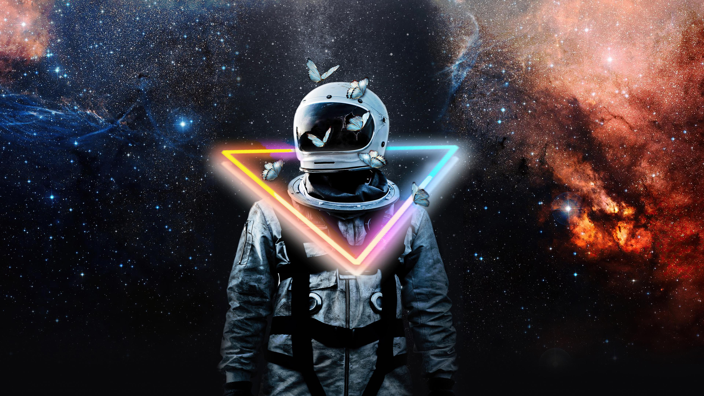

Space is amazing. The sheer vastness of it, along with the trillions upon trillions of objects in the many billion galaxies of the
universe is almost incomprehensible to the human brain. This page is a continuously updated list of the most incredible,awe-inspiring
and unbelievable facts about space. Whether it's for kids looking to learn more about space, or you're looking for incredible facts
for an article, or even if you just love space facts for no real reason, this is for you. Space does not begin at a specific altitude
above the Earth, but the Kármán line at 100 km is a commonly used definition. The temperature in the void of space is about
-270.45°C.
Space is a hard vacuum, meaning it is a void containing very little matter.There is no sound in space because molecules are too far
apart to transmit sound. One million Earths could fit inside the Sun, which is an average-size star.There is intermittent
running water on Mars, as well as on Earth. Space is a three-dimensional continuum containing positions and directions, and is part
of a four-dimensional continuum known as spacetime.Space is a vast, mysterious expanse that has fascinated humans for centuries.
From the twinkling stars to the enigmatic black holes, there's so much to learn and marvel at. Did you know that space is completely
silent because there is no atmosphere to carry sound? Or that a day on Venus is longer than a year on Venus? These mind-blowing facts only scratch the surface of what space
has to offer. Whether you're a budding astronomer or just curious about the cosmos, this list of 60 facts will take you on a journey
through the wonders of the universe. Buckle up and get ready to be amazed.About 70% of the total cost was for the backpack and control
module. If we were to convert the total amount to today's pricing, this would be approximately around $150 million. Up to now, NASA
reuses the spacesuits that were made in 1974. In 2019, the first all-female spacewalk was cancelled because of spacesuit good NASA
availability.